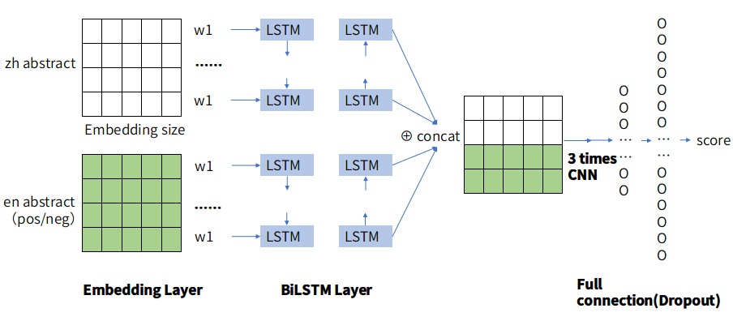
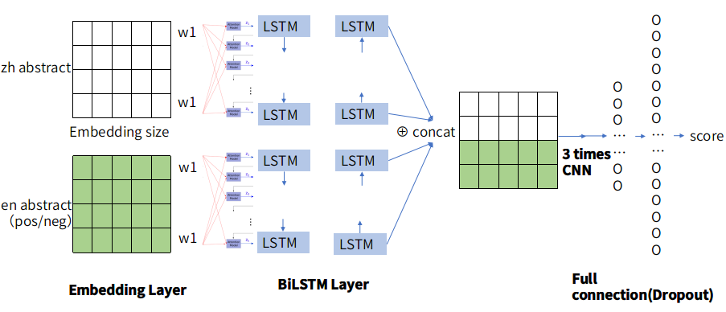
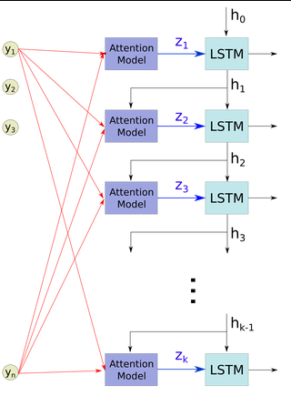
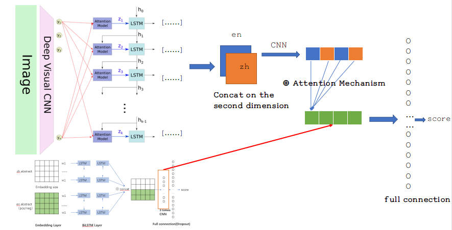
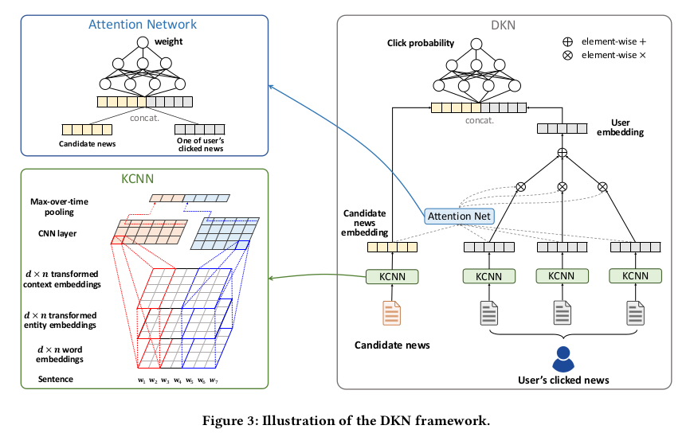
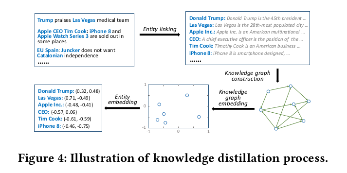

Outline
在浙江大学实习的课题是“跨语言的实体融合”，但是最后只做了对齐，还没有涉及到融合的方面。此文主要记录一下在实习阶段自己做的一些model、result还有future work。
主要分为以下几大板块：
- Introduction
- Model Details
- Related Work
- Future Work
- Reference
Introduction
Background
在知识图谱中有三大任务，其中有一个就是共指消解[1]，指的是将不同形式，但是是指向同一项实体的表示对齐。我们的课题“跨语言的实体对齐”就是其中一种，是对齐用不同语言指代的同一种实体，例如“apple phone”和“苹果手机”其实指的是同一样东西。对齐在知识融合中具有很大的基础价值，一旦实体对齐之后，才能很好的将两种或者多种不同语言、媒体的知识进行相互的补充和融合。
Data
数据来自浙江大学DCD实验室 鲁伟明教授小组。
Aims
对于一个中文百度百科实体，在100个候选Wikipedia中找出其对应的相同指代实体。
我们采用多种深度学习模型，输出计算后的候选者分数，分数越高说明越有可能是和中文对应的实体。我们设立了top1（前1名准确率）和top10（前10位准确率）最为衡量模型优劣的标准。
Model Details
在浙大的时候我尝试了2种模型，一种是BiLSTM+CNN，一种是Attention+BiLSTM+CNN。前者效果比较好，最高top1是17%，top10是64.4%。
BiLSTM+CNN
Model

模型整体比较简单。需要说明的是，训练的时候采用的是三元组的训练方式，为（中文实体，英文正例实体，英文负例实体）。
先讲一下训练模型：
-
embedding layer
将百度百科和两个Wikipedia的摘要转换为embedding，得到三个[embedding size, sequence length, 1]的矩阵。
-
bi-lstm layer
将前面一层得到的embedding数据，依次喂入到Bi-LSTM中。Bi-LSTM的数量为sequence length。
此层最终保留Bi-LSTM的hidden outputs，输出三个[sequence length, lstm hidden size * 2]的摘要表达。
-
concat layer
将前一层得到的中文实体摘要表示和英文正例、负例摘要表示分别在第二维上进行连接。
即concat（[hiddens_zh, hiddens_pos]），concat（[hiddens_zh, hiddens_neg]），得到两个[sequence length, lstm hidden size * 4]中英文交互表达。
为了输入到CNN中，在扩充了最后一维，表示1通道。
即此层最终输出两个[sequence length, lstm hidden size * 4，1]向量。
-
cnn layer
将上一层的输出，通过一层或者多层CNN+max pooling（通过cnn_layer_size_list参数动态调整）得到输出n个cnn output，输出大小根据参数变化。
在实验的过程，我采用3层cnn，kernel size分别为[3,4,5]时效果最好。
-
full connection layer
首先将上一层得到的n层CNN输出全部concat，并且reshape成一个一维的矩阵。
在这个一维矩阵上采用带L2正则化的full connection，分别得到postive的分数和negative的分数。
-
loss + optimizator
设定magrin，计算loss和accuracy。并采用AdamOptimizer。
预测模型
同训练模型类似，只是在预测模型中，我们是将需要预测的中文实体和100个候选者依次以（中文实体，正例实体）的方式结对放入模型中，而不放入负例。
通过整个模型之后，输出100个候选者的分数，计算top1和top10的准确率。
Model Result
| hyper parameter | Train accuracy | Val accuracy | Test accuracy |
|---|---|---|---|
| Filter number =16，Barch size =256 | 96.8% | Top1：21.7% Top10：65.8% | Top1：13.5% Top10：60% |
| Filter number =128，Barch size =256 | 100% | Top1：21.7% Top10：71.3% | Top1：17% Top10：64.4% |
| Filter number =64，Barch size =128 | 98.4% | Top1：14.7% Top10：65.1% | Top1：14.4% Top10：60.2% |
| Filter number =64，Barch size =32 | 100% | Top1：13.9% Top10：46.5% | Top1：9.25% Top10：48.2% |
Attention+BiLSTM+CNN
在第一个模型的基础上，在参考了[2]的attention机制之后，在embedding layer和bi-LSTM layer之间加了一层attention。如下图:

其中attention的细节图如下两张：

下图是每一个attention的内部结构图:

Model Result
修改后的模型效果并没有改进，在Filter number =128，Barch size =256 的条件下，测试集上最好的结果也只是top1：12%，top10: 46%。
Related Work
陈璐 @ 中山大学 复现了 Convolutional Neural Networks for Soft-Matching N-Grams in Ad-hoc Search，并应用到此课题上。
郭悦 @ 中山大学 复现了 Bilateral Multi-Perspective Matching for Natural Language Sentences。同时基于此论文，将最后一层LSTM换成CNN后，将准确率提高了8%。
| Model | Train accuracy | Val accuracy | Test accuracy |
|---|---|---|---|
| Conv-K-NRM | 100% | Top1：35% Top10：85% | Top1：29% Top10：73.8% |
| Bi-MPM+CNN | 100% | Top1：25.7% Top10：72.0% | Top1：27% Top10：72.9% |
Future Work
在同组内其他同学的对比之后，觉得自己的模型的准确率有点低。因此考虑一些改进措施。
图片Attention做补充

上图是文章[3]中提出的基于attention的图片字幕生成模型。下图是模型在某一个测试图片上的可视化表示：


借助文章中对于图片采用attention mechanism生成字幕的方法，我们可以利用此方法提取某一个中文百科对应的多张图片的比较general的图片描述。再利用这种图片描述，对摘要或者标题进行一个attention的辅助，或者直接只用图片做对齐。
下图是当此图片描述作为其他模型的attention的辅助的模型描述：

模型解释：
-
首先将某一个百科或者Wikipedia的图片通过论文中提出的模型（即图中上半部分的模型）得到某一张百科/Wikipedia的图片描述。
然后将百科和postive，百科和negative分别在第三维上concat，变成2通道的矩阵。
在2通道数据的基础上，通过一层或多层CNN得到结对交互表示。
-
取出我前面提出的BiLSTM+CNN中的CNN layer后的输出表示为X，将得到的（百科，postive），（百科，negative）的结对表示，在数据X上做attention mechanism。
-
最后将attention mechanism的输出通过一层或多层全连接得到最终分数。
模型弊端：
-
此方法的弊端一，文章[3]模型的方法是否具有较高的普适性，对于我们百度百科/Wikipedia的图片数据，是不是会出现比较大的噪声。
-
第二个问题，因为我曾经在实验室的服务器上跑过此论文的复现，但是最终以oom的报错没有跑出结果。所以可能如果需要尝试的话，可能需要升级服务器配置。
-
第三个问题就是在论文的复现中，最终输出是one hot编码，如果用word embedding来训练会比较好，这样相当于是从图片向量空间转换到文字向量空间中，这样方便去补充到过去一些通过NLP手段做对齐的模型中。
多粒度表示
在文章[4]的启发下，考虑到能否采用多粒度的表征进行学习。即不仅有word embedding，还有sentence embedding，甚至可以context embedding去做分层化的学习。

这样的话，模型会提供层次结构, 反映文件中word，sentence两个粒度的层次结构。
同时是在多个粒度上分别做Attention Mechanism, 使其能够在构建文档表示时，对不重要和重要的内容进行差异化表示。
此方法的可行度较高，但是数据预处理那一块可能需要做一个简单修改。
KCNN（knowledge-aware convolutional neural network）
虽然这篇文章[5]的方向是news recommendation，不是知识图谱，但是在论文中他利用KG去对news recommendation做补充而提出的KCNN（knowledge-aware convolutional neural network）却有借鉴意义。
全文的推荐模型如下：

我们主要关注的是KCNN这一块，其他的部分都是比较常规的模型搭建方法。其他部分的讲解可以看这个详细说明
KCNN模型同样也体现出了多粒度这么一个概念，从word embedding到entity embedding，再到context embedding，但是不同于文章[4]中提出的entity embedding是由word embedding得出，context embedding是由entity embedding得出这种机制，在这篇论文中，这三个粒度之间的交互并不强。
三种粒度的表示：
word embedding是普通的生成方式。
而entity embedding是由下图这种图的方式进行构建：提取相关文本中的实体，构建知识网络，再降维到二维空间，得到每一个涉及到的实体的向量表达。

context embedding则是由下图方式得到：也是提取实体，构建知识网络，并按照一定的依据划分出context embedding。

此方法的个人想法
这个方法比较创新，因为本来此论文就是今年1月份发表的。
但是要从此入手的话，比较费时费力，因为从前的在数据集上的工作的可能并不能做一个很好的重用，而且entity embedding和context embedding的构建也比较麻烦。
如果能和上交或者微软研究所那边的老师进行联系，得到相关数据的支持，可能会方便一点。
Reference
- 刘峤, 李杨, 段宏,等. 知识图谱构建技术综述[J]. 计算机研究与发展, 2016, 53(3):582-600.
- Yang Z, Yang D, Dyer C, et al. Hierarchical Attention Networks for Document Classification[C]// Conference of the North American Chapter of the Association for Computational Linguistics: Human Language Technologies. 2017:1480-1489.
- Xu K, Ba J, Kiros R, et al. Show, Attend and Tell: Neural Image Caption Generation with Visual Attention[J]. Computer Science, 2015:2048-2057.
- Yang Z, Yang D, Dyer C, et al. Hierarchical Attention Networks for Document Classification[C]// Conference of the North American Chapter of the Association for Computational Linguistics: Human Language Technologies. 2017:1480-1489.
- Wang H, Zhang F, Xie X, et al. DKN: Deep Knowledge-Aware Network for News Recommendation[J]. 2018.